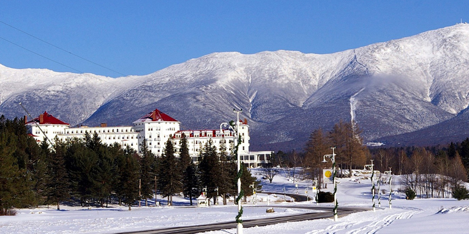
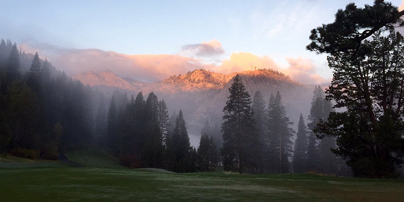

White Mountains region is one of the most breathtaking attractions located in New Hampshire. It is home to a large number of hiking trails and ski areas with spectacular scenery!

The White Mountains of New Hampshire has a wealth of accommodations to suit every need and taste. Everything from Grand Resorts to quiet campgrounds in the midst of our beautiful natural beauty.

One of most important things when it comes to hiking in the great outdoors is packing accordingly. Here are a few tips: